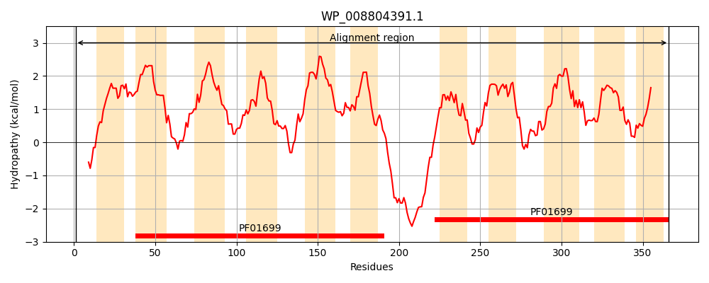
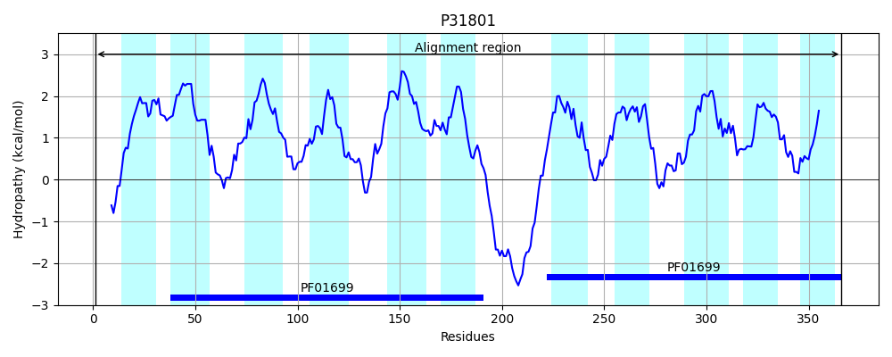
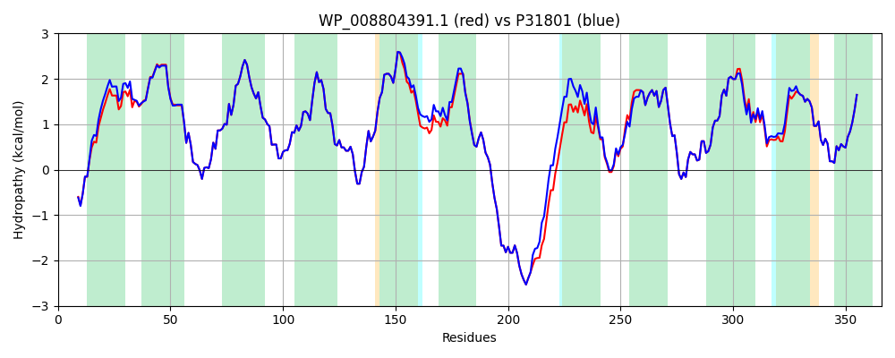

Hit Accession: P31801
Hit TCID: 2.A.19.1.1
Hit Description: gnl|BL_ORD_ID|9798 gnl|TC-DB|P31801|2.A.19.1.1 CALCIUM/PROTON ANTIPORTER - Escherichia coli.
Mach Len: 366
e:0.000000
Query TMS Count : 11
Hit TMS Count: 11
TMS-Overlap Score: 10.350000
Predicted Substrates:CHEBI:3308;calcium(2+), CHEBI:9175;sodium(1+), CHEBI:8345;potassium(1+), CHEBI:5584;hydron
BLAST Alignment:
Score: 1706 , Bit scores: 661 bits, E-value: 0.0e+00, Alignment length: 366, Percentage identity: 93
Query: 1 MTHAHEAVKTRHKESSLVFPVLALAVLFFWGSSQSLPVVIAINILALVGILSSAFSVVRHADVLAHRLGEPYGSLILSLSVVILEVSLISALMATGDAAPTLMRDTLYSIIMIVTGGLVGFSLLLGGRKFATQYMNLFGIKQYLIALFPLAIIVLVFPMALPGANFSTGQSLLVAVISAAMYGVFLLIQTKTHQSLFVYEHEDDSDDDDPHHGKPSAHSSGWHTAWLLVHLVAVIAVTKMNANPLETLLTSMNAPVAFTGFLVALLILSPEGLGALKAVLNNQVQRAMNLFFGSVLATISLTVPVVTLIAFLTGNELRFGLGAPEMVVMVASLVLCHISFSTGRTNVLNGAAHLALFAAYLMTIFA 366
M++A EAVKTRHKE+SL+FPVLAL VLF WGSSQ+LPVVIAIN+LAL+GILSSAFSVVRHADVLAHRLGEPYGSLILSLSVVILEVSLISALMATGDAAPTLMRDTLYSIIMIVTGGLVGFSLLLGGRKFATQYMNLFGIKQYLIALFPLAIIVLVFPMALP ANFSTGQ+LLVA+ISAAMYGVFLLIQTKTHQSLFVYEHEDDSDDDDPHHGKPSAHSS WH WL++HL+AVIAVTKMNA+ LETLL SMNAPVAFTGFLVALLILSPEGLGALKAVLNNQVQRAMNLFFGSVLATISLTVPVVTLIAF+TGNEL+F LGAPEMVVMVASLVLCHISFSTGRTNVLNGAAHLALFAAYLMTIFA
Sbjct: 1 MSNAQEAVKTRHKETSLIFPVLALVVLFLWGSSQTLPVVIAINLLALIGILSSAFSVVRHADVLAHRLGEPYGSLILSLSVVILEVSLISALMATGDAAPTLMRDTLYSIIMIVTGGLVGFSLLLGGRKFATQYMNLFGIKQYLIALFPLAIIVLVFPMALPAANFSTGQALLVALISAAMYGVFLLIQTKTHQSLFVYEHEDDSDDDDPHHGKPSAHSSLWHAIWLIIHLIAVIAVTKMNASSLETLLDSMNAPVAFTGFLVALLILSPEGLGALKAVLNNQVQRAMNLFFGSVLATISLTVPVVTLIAFMTGNELQFALGAPEMVVMVASLVLCHISFSTGRTNVLNGAAHLALFAAYLMTIFA 366 | Protein Hydropathy Plots: |
|---|
|  |  |
Pairwise Alignment-Hydropathy Plot:
|
|---|
|  |